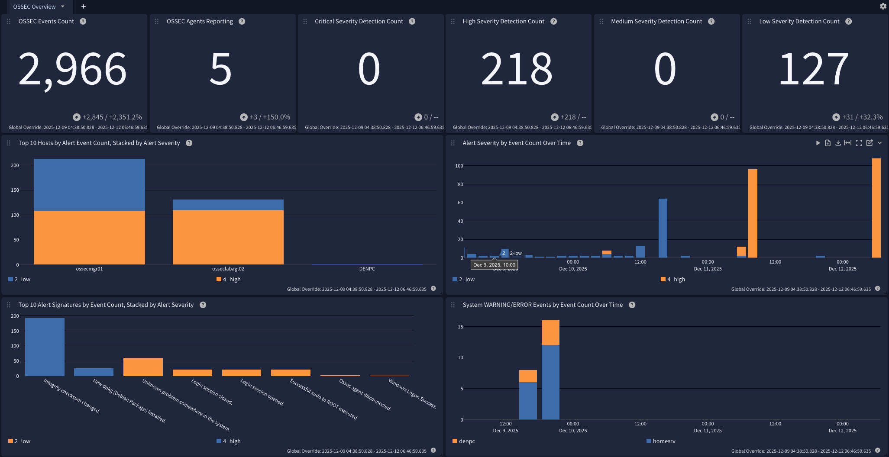

The OSSEC HIDS Processing Pack is designed to extract, normalize, and enrich OSSEC findings for more effective analysis and monitoring. It parses OSSEC HIDS logs into structured fields and adds useful context like event categorization (e.g., authentication). This enables faster search, correlation, and dashboarding across diverse environments.
Graylog 7.0.0+ with a valid Enterprise license
OSSEC manager configured to generate alerts.json
Graylog Sidecar or stand-alone Filebeat agent installed on OSSEC system(s)
OSSEC manager and agents use default log file names: ossec.log, alerts.json, firewall.log, active-responses.log
OSSEC 3.7.0+
This pack was designed to use the Elastic Filebeat agent for log delivery. This can be configured easily using the Graylog Sidecar. The collection of OSSEC logs should be performed from the manager and all agents.
This configuration requires that the account used to run the Graylog Sidecar/Filebeat agent have the necessary permissions to access the OSSEC log files. When running Sidecar/Filebeat with a non-root service account it will be necessary to grant that service account account access to the log files.
The OSSEC manager must be configured to generate JSON-formatted alerts.
Edit the ossec.conf file on the OSSEC manager
locate the <global>...</global> section in the OSSEC configuration
Add the entry <jsonout_output>yes</jsonout_output> inside the OSSEC <global> section
The result should look like:
Please refer to the official documentation to set up Graylog Sidecar for Filebeat.
Create a matching Beats input in Graylog.
Ensure that the option Do not add Beats type as prefix is disabled.
Add the following example configuration snippet to your Filebeat configuration for Linux systems:
Add the following example configuration snippet to your Filebeat configuration for Windows systems:
This technology pack includes 1 stream:
This technology pack includes 1 index set definition:
Rules to parse, normalize, and enrich OSSEC log messages.
A Spotlight containing a dashboard which can be used to analyze OSSEC log messages.
OSSEC agents and managers generate multiple log files, each serving a distinct operational or security purpose:
alerts.json: JSON-formatted alert records generated by the OSSEC analysis engine. These entries represent detections produced by rules and decoders. Scope: OSSEC manager only.ossec.log: Plain text service log containing messages related to OSSEC component startup, shutdown, internal state changes, errors, and operational warnings. Scope: All OSSEC systems (manager and agents).active-responses.log: Plain text log recording the execution of active response actions (for example, command invocation, target address, and result). This log reflects what OSSEC attempted to do in response to an alert, not necessarily what the underlying system enforced. Scope: Any system with active responses enabled (manager and or agents).firewall.log: Plain text log recording firewall-related activity associated with OSSEC active responses, such as IP blocking actions performed via firewall scripts (for example, firewall-drop.sh). Entries typically reflect actions taken by OSSEC against the local firewall rather than a complete record of firewall traffic. Scope: Systems where firewall-based active responses are executed (typically agents, but may include the manager if configured).{"rule":{"level":2,"comment":"Unknown problem somewhere in the system.","sidid":1002,"firedtimes":2,"groups":["syslog","errors"]},"id":"1765569701.46775","TimeStamp":1765569701000,"location":"/var/log/syslog","full_log":"2025-12-12T20:01:41.366698+00:00 ossecmgr01 systemd[1]: Finished update-notifier-download.service - Download data for packages that failed at package install time.","hostname":"ossecmgr01","program_name":"systemd","decoder_desc":{},"agent_name":"ossecmgr01","timestamp":"2025 Dec 12 20:01:41","logfile":"/var/log/syslog"}
2025/12/05 23:31:54 INFO: Connected to 203.0.113.100 at address 203.0.113.100:1514, port 1514
2025/12/05 23:31:54 ossec-syscheckd: INFO: Monitoring directory: 'C:\\Windows/System32/at.exe', with options perm | size | owner | group | md5sum | sha1sum.
Thu Dec 4 08:30:14 PM UTC 2025 /var/ossec/active-response/bin/host-deny.sh add - 198.51.100.53 (from_the_server) (no_rule_id)
2025 Dec 05 14:03:47 (osseclabagt02) 198.51.100.254->/var/log/syslog UNKNOWN TCP 203.0.113.5:54321->192.0.2.10:22
Categorization is assigned according to the OSSEC alert signature ID which is stored in the rule.sidid field in the source message, or alert_signature_id in the normalized message. These assignments are based on the default source ruleset included with OSSEC. The default rules can be found on the OSSEC manager, typically in the directory /var/ossec/rules/.
| OSSEC SIDID/Range or Property | Event Description | gim_event_type_code | gim_event_class | gim_event_category | gim_event_subcategory | gim_event_type |
|---|---|---|---|---|---|---|
| 550-555 | File Integrity Finding | 301003 | detection | detection.host_detection | fim_detection | |
| File syscheck events | File Integrity Finding | 301003 | detection | detection.host_detection | fim_detection | |
| 593, 18118 | Windows Audit Log Cleared | 220000 | endpoint | audit | audit.integrity | audit log cleared |
| 594-598 | Windows Registry Integrity Events | 259999 | endpoint | registry | registry.default | registry event |
| Registry syscheck events | Windows Registry Integrity Events | 259999 | endpoint | registry | registry.default | registry event |
| All other OSSEC SID IDs | This is an implicit mapping for all other OSSEC alerts | 301002 | detection | detection.host_detection | hips_detection |
OSSEC alerts refer to the messages generated, stored, and collected from the file alerts.json. The OSSEC alerts log file will only be generated on the OSSEC manager.
| Normalized Field Name | OSSEC Source Property | Notes |
|---|---|---|
alert_category
|
rule.groups | |
alert_signature
|
rule.comment or rule.description | The alert_signature field will be copied from the rule comment or description property, in that order. |
alert_signature_id
|
rule.sidid | |
file_hash_md5
|
SyscheckFile.md5_after | File integrity events only. |
file_hash_md5_previous
|
SyscheckFile.md5_before | File integrity events only. |
file_hash_sha1
|
SyscheckFile.sha1_after | File integrity events only. |
file_hash_sha1_previous
|
SyscheckFile.sha1_before | File integrity events only. |
file_path
|
SyscheckFile.path | File integrity events only. |
host_hostname
|
agent_name | |
host_ip
|
agentip | |
registry_hash_md5
|
SyscheckFile.md5_after | Registry integrity events only. |
registry_hash_md5_previous
|
SyscheckFile.md5_before | Registry integrity events only. |
registry_hash_sha1
|
SyscheckFile.sha1_after | Registry integrity events only. |
registry_hash_sha1_previous
|
SyscheckFile.sha1_before | Registry integrity events only. |
registry_path
|
SyscheckFile.path | Registry integrity events only. |
source_ip
|
srcip | |
user_name
|
various | This will either be pulled from srcuser, dstuser, or extracted depending upon the OSSEC source message. |
vendor_alert_severity_level
|
rule.level | |
vendor_event_description
|
rule.comment or rule.description | For log cleared alerts only. |
vendor_full_log
|
full_log | For log-based OSSEC alerts, a copy of the log used for the detection. |
vendor_rule_firedtimes
|
rule.firedtimes |
The OSSEC system log messages are saved to the file ossec.log on the manager and all agents.
| Normalized Field Name | Example values | Description |
|---|---|---|
destination_hostname
|
ossecmgr01 | Hostname assigned to the target of an action described in the log. |
destination_ip
|
203.0.113.24 | Network IP address of the target system of an action described in the log. |
destination_port
|
1514 | Network service port of the target system of an action described in the log. |
service_name
|
OSSEC HIDS | OSSEC service name. |
vendor_event_action
|
Starting | OSSEC-defined action described in the log. |
vendor_subtype
|
system | The log subtype for system messages. |
The OSSEC firewall log messages are saved to the file firewall.log on the OSSEC systems were the activity is observed.
| Field Name | Description |
|---|---|
destination_ip
|
The IP address targeted by the network connection recorded in the firewall log entry. |
destination_port
|
The destination port number associated with the recorded network connection. |
event_observer_ip
|
The OSSEC-registered IP of the OSSEC agent that observed and reported the originating log event. |
source_ip
|
The remote IP address that initiated the network connection. |
source_port
|
The source port number used by the initiating host for the connection. |
vendor_action
|
The firewall action classification assigned by OSSEC (e.g., DROP, REJECT, UNKNOWN). |
vendor_agent_name
|
The OSSEC agent name reporting the event as recorded in the firewall log. |
vendor_logfile
|
The path to the original log file on the agent that triggered the firewall active response. |
vendor_protocol
|
The transport protocol (e.g., TCP, UDP, ICMP) extracted from the triggering event. |
vendor_subtype
|
The log subtype for OSSEC firewall log messages. |
vendor_timestamp
|
The timestamp applied by OSSEC when writing the firewall log entry. |
This spotlight offers a dashboard with 1 tab:
